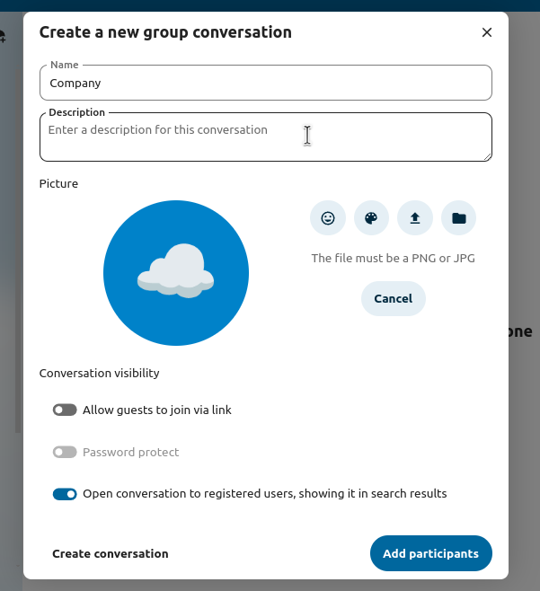
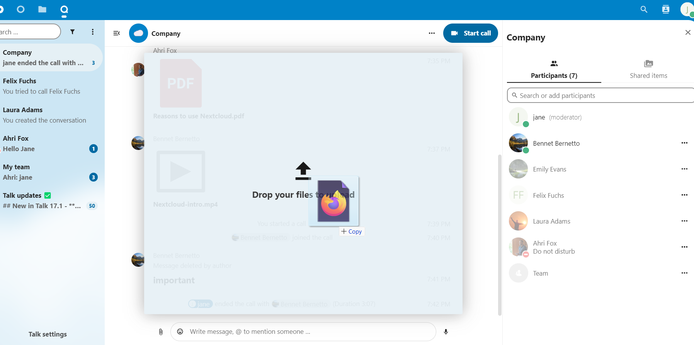
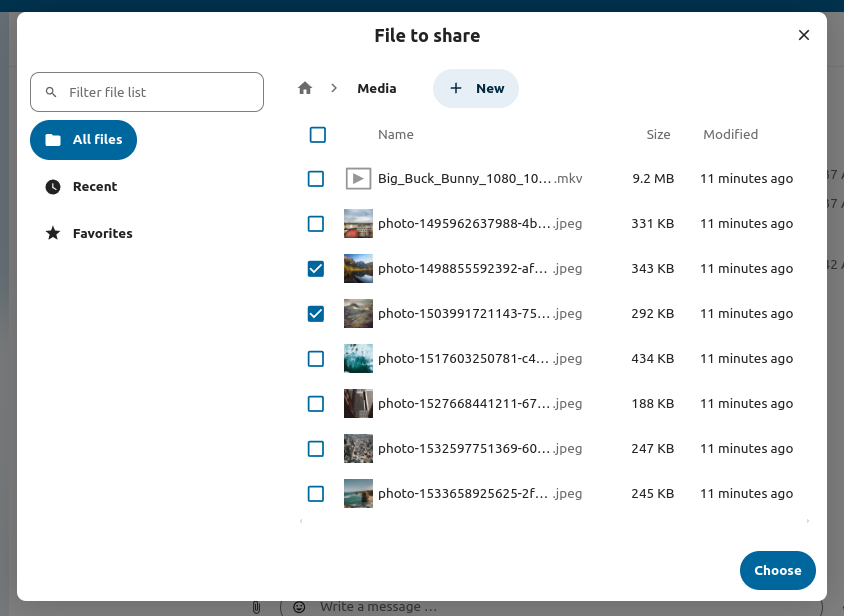
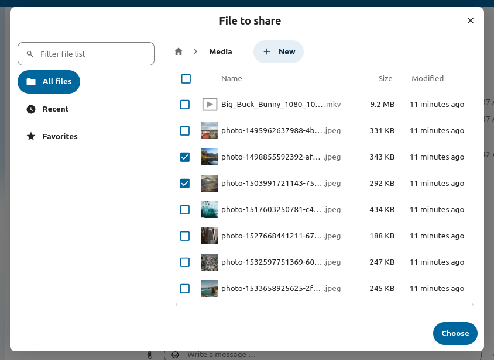
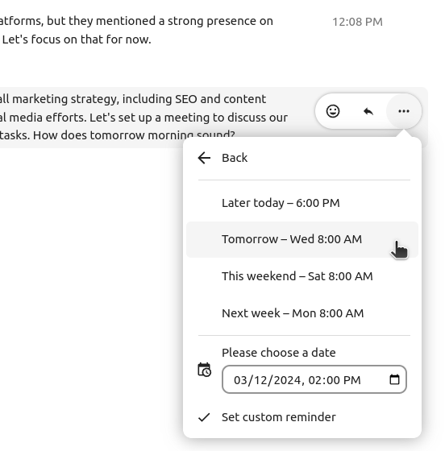
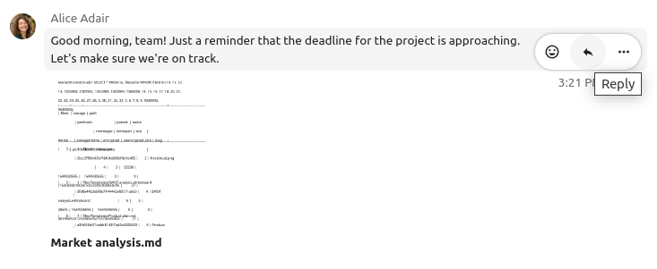

Conceptos básicos de Talk de Nextcloud
Nextcloud Talk permítelle parolar e facer videochamadas no seu propio servidor.
As parolas e as chamadas teñen lugar nas conversas. Pode crear calquera número de conversas. Hai dous tipos de conversas:
Conversas persoais. É unha parola privada ou chamada privada con outro usuario de Talk (un a un). Non pode engadir outras persoas a esta conversa nin compartila cunha ligazón. Para iniciar unha parola directa (un a un), busque outro usuario na barra de buscas e prema sobre o seu nome.
Conversas en grupo. Ademais da persoa que creou a conversa, unha conversa en grupo pode ter calquera número de persoas. Unha conversa de grupo pódese compartir publicamente cunha ligazón, para que usuarios convidados externos poidan unirse a unha chamada. Tamén se pode listar, para que outras persoas da súa instancia de Nextcloud poidan unirse á conversa.
Crear unha parola
Pode crear unha parola directa e individual (un a un) buscando o nome dun usuario, un grupo ou un círculo e premendo sobre el. Para un único usuario, créase inmediatamente unha conversa e pode iniciar a súa parola. Para un grupo ou círculo pode escoller un nome e uns axustes antes de crear a conversa e engadir os participantes.

If you want to create a custom group conversation, click the button next to the search field and filters button and then on Create a new conversation.

A seguir, pode escoller un nome para a conversa, poñerlle unha descrición e definir un avatar para ela (cunha foto ou un «emoji» enviado) e seleccionar se a conversa debe estar aberta a usuarios externos e se outros usuarios do servidor poden ver a conversa e unirse a ela.
{kind=link}
No segundo paso, pode engadir participantes e rematar a creación da conversa.

Pode cancelar a creación dunha conversa premendo fóra da área branca do menú en calquera momento.

Ver todas as conversas abertas
You can view all the conversations that you can join by clicking the button next to the search field and filters button and then on Join open conversations.

Filtrar as súas conversas
Pode filtrar as súas conversas usando o botón de filtro situado xunto ao campo de busca. Existen dúas opcións para filtrar: 1. Filtrar mencións non lidas: esta opción permítelle ver conversas de grupo con mencións sen ler ou conversas individuais sen ler. 2. Filtrar mensaxes non lidas: esta opción permítelle ver todas as mensaxes non lidas en todas as conversas ás que se uniu.

Após pode borrar o filtro dende o menú de filtros.

Compartir ficheiros nunha parola
Nunha parola, pode compartir ficheiros de 3 maneiras.
A primeira, pode simplemente arrastralos e soltalos na parola.
A segunda, pode seleccionar un ficheiro do seu Ficheiros de Nextcloud ou dun xestor de ficheiros escollendo o pequeno clip e seleccionando de onde quere coller o ficheiro.
 

{kind=link}
You can add more files until you are done and decide to share the files. You can also add a text caption to your shared files, providing a brief description or context.

Todos os usuarios poderán premer nos ficheiros para velos, editalos ou descargalos, independentemente de que teñan unha conta de usuario. A os usuarios con conta compartiráselle o ficheiro automaticamente, mentres que aos usuarios convidados externos compartiráselle como ligazón pública.

Inserir un «emoji»
Pode engadir un «emoji» usando o selector situado á esquerda do campo de entrada de texto.

Using Markdown
You can enhance your messages with a markdown syntax support. See list for usage:
Headings and dividers
# Heading 1
## Heading 2
### Heading 3
#### Heading 4
##### Heading 5
###### Heading 6
Heading
===
Normal text
***
Normal text
Inline decorations
**bold text** __bold text__
*italicized text* _italicized text_
`inline code` ``inline code``
```
.code-block {
display: pre;
}
```
Lists
1. Ordered list
2. Ordered list
* Unordered list
- Unordered list
+ Unordered list
Quotes
> blockquote
second line of blockquote
Setting reminder on messages
You can set reminders on specific messages. If there’s an important message you want to be notified about later, simply hover over it and click on the reminder icon.

In the submenu, you can select an appropriate time to receive a notification later.
{kind=link}
Responder mensaxes e moito máis
Pode responder a unha mensaxe usando a frecha que aparece cando pasa o rato sobre nunha mensaxe.
{kind=link}
No menú … tamén pode optar por responder en privado. Isto abrirá unha parola un a un.

Aquí tamén pode crear unha ligazón directa á mensaxe ou marcala como non lida para que se desprace ata ela a próxima vez que entre na parola. Cando se trate dun ficheiro, pode velo en Ficheiros.
Xestionar unha conversa
Vde. sempre é moderador na súa nova conversa. Na lista de participantes pode promover a outros participantes a moderadores usando o menú … á dereita do seu nome de usuario, asignarlles permisos personalizados ou eliminalos da conversa.
Cambiar os permisos dun usuario que se uniu a unha conversa pública tamén o engadirá permanentemente á conversa.

Os moderadores poden configurar a conversa. Seleccione Axustes da conversa no menú ... da conversa na parte superior para acceder aos axustes.

Aquí pode configurar a descrición, o acceso de convidado, se a conversa é visíbel para os demais no servidor e máis.

Messages expiration
A moderator can configure message expiration under the Conversation settings within the Moderation section. Once a message reaches its expiration time, it is automatically removed from the conversation.
The available expiration durations are 1 hour, 8 hours, 1 day, 1 week, 4 weeks, or never (which is the default setting).

Iniciar unha chamada
Cando está nunha conversa, pode iniciar unha chamada en calquera momento co botón Iniciar chamada. Outros participantes recibirán unha notificación e poderán unirse á chamada.

Se alguén xa iniciou unha chamada, o botón converterase nun botón verde Unirse á chamada.

Durante unha chamada, pode silenciar o micrófono e desactivar o seu vídeo cos botóns da parte dereita da barra superior, ou usando os atallos M para silenciar o son e V para desactivar o vídeo. Tamén pode usar a barra de espazo para desactivar o silencio. Cando estea silenciado, premendo a barra de espazo activarao para que poida falar ata que solte a barra de espazo. Se está desactivado o silencio, ao premer espazo silenciarao ata que o solte.
Podes agochar o seu vídeo (útil durante unha compartición de pantalla) coa pequena frecha situada enriba do fluxo de vídeo. Volva amosalo coa pequena frecha.
Pode acceder aos seus axustes e escoller unha cámara web, un micrófono e outros axustes no menú … da barra superior.

From media settings dialog, you can also change the background of your video.

Pode cambiar outras opcións no diálogo Axustes de Talk.
Iniciar unha compartición de pantalla
You can click the monitor icon on your video stream to share your screen. Depending on your browser, you will get the option to share a monitor, an application window or a single browser tab. If video from your camera is also available, other participants will see it in a small presenter view next to the screen share.

Cambiar a vista nunha chamada
Pode cambiar a vista nunha chamada coa pequena icona de catro bloques no canto superior dereito entre a vista promovida e a vista en grade. A vista en grade amosará a todos igual de grandes e, se as persoas non caben na pantalla, aparecerán botóns á esquerda e á dereita que lle permitirán desprazarse.

A vista promovida amosa o falante en grande e aos demais nunha fila abaixo. Se as persoas non caben na pantalla, aparecerán botóns á esquerda e á dereita que lle permitirán desprazarse.